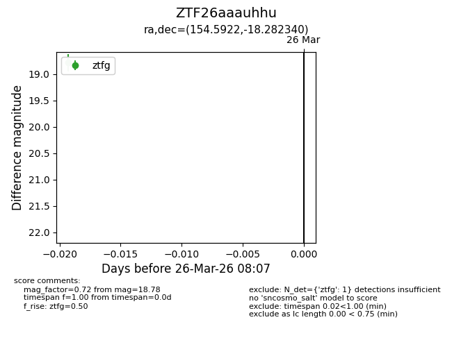
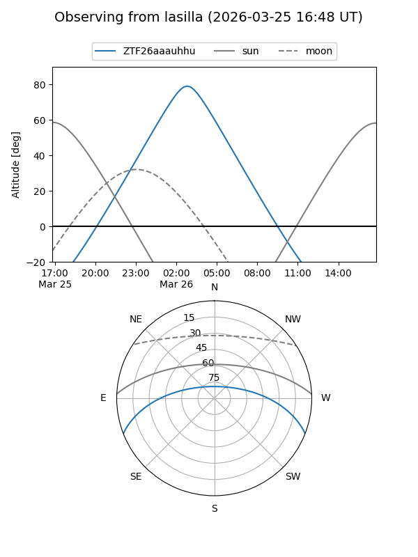
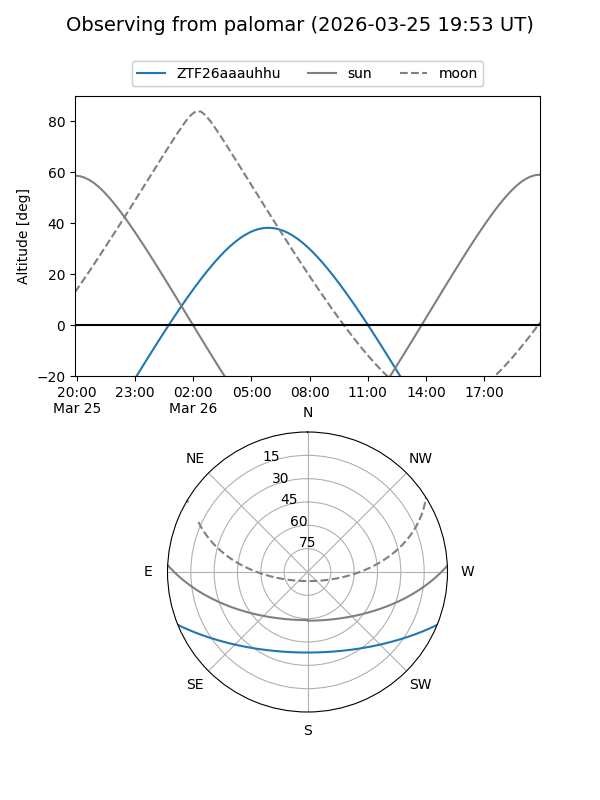

ZTF26aaauhhu
Target ZTF26aaauhhu at 2026-03-26 08:09
Aliases and brokers:
FINK: link
Lasair: link
ALeRCE: link
alt names
ZTF26aaauhhu (ztf,fink_ztf)
Coordinates:
equatorial (ra, dec) = 154.5922,-18.28234
equatorial (HMS+DMS) = 10:18:22.13,-18:16:56.42
galactic (l, b) = (259.4056,+31.36195)
Flags:
Photometry:
last ztfg=18.78
1 ztfg detections
Lightcurve

Visibility


Additional plots